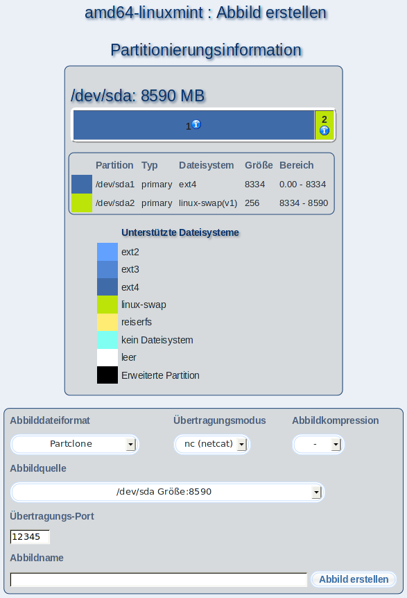

Mit diesem Dialog können Sie Dateiabbilder von Partitionen oder ganzen Laufwerken eines Clients erstellen, die Sie anschließend zum Installieren von anderen Clients nutzen können. Wählen Sie dazu das gewünschte Abbilddateiformat, den Übertragungsmodus und die Abbildkompression aus. Je nach Abbilddateiformat müssen Sie bei Äbbildquelle" zusätzliche Angaben machen, z.B. die Partition oder das komplette Laufwerk, das in der Abbilddatei gespeichert werden soll.
Wählen Sie dann einen Namen für die Datei und tragen ihn unter Äbbildname" ein. Klicken Sie anschließend auf Äbbild erstellen".
Eine Übersicht über alle erstellten Abbilddateien erhalten Sie unter SServer-Einstellungen"
Äbbilddateien verwalten", wo Sie auch nicht mehr benötigte Abbilddateien löschen können.
Wenn Sie die hier erstellte Abbilddatei für die Installation eines Clients verwenden möchten, wählen Sie bitte beim Ëinrichten" des Clients als Distribution Ïmaging" aus.
Unterabschnitte
root
2013-08-18